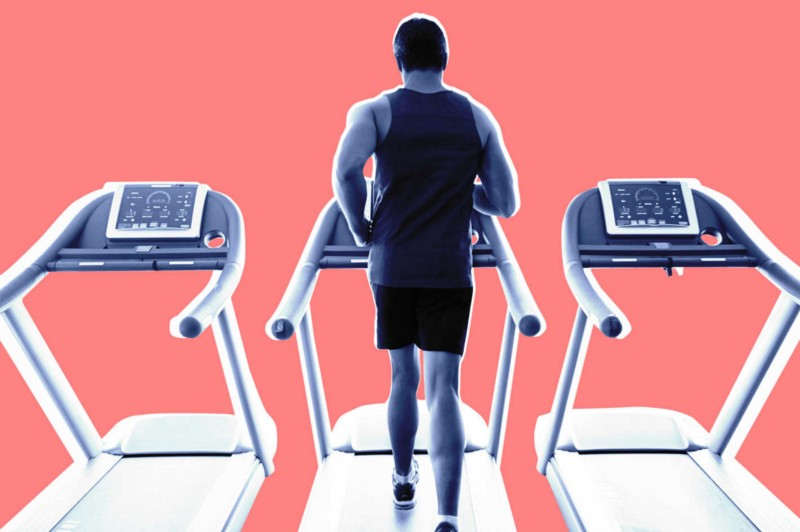

How Exercise Shapes You, Far Beyond the Gym
There's value in learning to be comfortable with being uncomfortable

Photo: Grady Reese
When I first started training for marathons a little over ten years ago, my coach told me something I've never forgotten: that I would need to learn how to be comfortable with being uncomfortable. I didn't know it at the time, but that skill, cultivated through running, would help me as much, if not more, off the road as it would on it.
It's not just me, and it's not just running. Ask anyone whose day regularly includes a hard bike ride, sprints in the pool, a complex problem on the climbing wall, or a progressive powerlifting circuit, and they'll likely tell you the same: A difficult conversation just doesn't seem so difficult anymore. A tight deadline not so intimidating. Relationship problems not so problematic.
Maybe it's that if you're regularly working out, you're simply too tired to care. But that's probably not the case. Research shows that, if anything, physical activity boosts short-term brain function and heightens awareness. And even on days they don't train — which rules out fatigue as a factor — those who habitually push their bodies tend to confront daily stressors with a stoic demeanor. While the traditional benefits of vigorous exercise — like prevention and treatment of diabetes, heart disease, stroke, hypertension, and osteoporosis — are well known and often reported, the most powerful benefit might be the lesson that my coach imparted to me: In a world where comfort is king, arduous physical activity provides a rare opportunity to practice suffering.
Few hone this skill better than professional endurance and adventure athletes, who make a living withstanding conditions others cannot. For mycolumn with Outside Magazine, I've had the privilege of interviewing the world's top endurance and adventure athletes on the practices underlying their success. Regardless of sport, the most resounding theme, by far, is that they've all learned how to embrace uncomfortable situations:
• Olympic marathoner Des Linden told me that at mile 20 of 26.2, when the inevitable suffering kicks in, through years of practice she's learned to stay relaxed and in the moment. She repeats the mantra: “calm, calm, calm; relax, relax, relax.”
• World-champion big-wave surfer Nic Lamb says being uncomfortable, and even afraid, is a prerequisite to riding four-story waves. But he also knows it's “the path to personal development.” He's learned that while you can pull back, you can almost always push through. “Pushing through is courage. Pulling back is regret,” he says.
• Free-soloist Alex Honnold explains that, “The only way to deal with [pain] is practice. [I] get used to it during training so that when it happens on big climbs, it feels normal.”
• Evelyn Stevens, the women's record holder for most miles cycled in an hour (29.81 — yes, that's nuts), says that during her hardest training intervals, “instead of thinking I want these to be over, I try to feel and sit with the pain. Heck, I even try to embrace it.”
• Big-mountain climber Jimmy Chin, the first American to climb up — and then ski down — Mt. Everest's South Pillar Route, told me an element of fear is there in everything he does, but he's learned how to manage it: “It's about sorting out perceived risk from real risk, and then being as rational as possible with what's left.”
But you don't need to scale massive vertical pitches or run five-minute miles to reap the benefits. Simply training for your first half marathon or CrossFit competition can also yield huge dividends that carry over into other areas of life. In the words of Kelly Starrett, one of the founding fathers of the CrossFit movement, “Anyone can benefit from cultivating a physical practice.” Science backs him up.
A study published in the British Journal of Health Psychology found that college students who went from not exercising at all to even a modest program (just two to three gym visits per week) reported a decrease in stress, smoking, alcohol and caffeine consumption, an increase in healthy eating and maintenance of household chores, and better spending and study habits. In addition to these real-life improvements, after two months of regular exercise, the students also performed better on laboratory tests of self-control. This led the researchers to speculate that exercise had a powerful impact on the students' “capacity for self-regulation.” In laypeople's terms, pushing through the discomfort associated with exercise — saying “yes” when their bodies and minds were telling them to say “no” — taught the students to stay cool, calm, and collected in the face of difficulty, whether that meant better managing stress, drinking less, or studying more.
For this reason, the author Charles Duhigg, in his 2012 bestseller The Power of Habit, calls exercise a “keystone habit,” or a change in one area life that brings about positive effects in other areas. Duhigg says keystone habits are powerful because “they change our sense of self and our sense of what is possible.” This explains why the charity Back on My Feet uses running to help individuals who are experiencing homelessness improve their situations. Since launching in 2009, Back on My Feet has had over 5,500 runners, 40 percent of whom have gained employment after starting to run with the group and 25 percent of whom have found permanent housing. This is also likely why it's so common to hear about people who started training for a marathon to help them get over a divorce or even the death of a loved one.
Another study, this one published in the European Journal of Applied Physiology, evaluated how exercise changes our physiological response to stress. Researchers at the Karlsruhe Institute of Technology, in Germany, divided students into two groups at the beginning of the semester and instructed half to run twice a week for 20 weeks. At the end of the 20 weeks, which coincided with a particularly stressful time for the students — exams — the researchers had the students wear heart-rate monitors to measure their heart-rate variability, which is a common indicator of physiological stress (the more variability, the less stress). As you might guess by now, the students who were enrolled in the running program showed significantly greater heart-rate variability. Their bodies literally were not as stressed during exams: They were more comfortable during a generally uncomfortable time.
What's remarkable and encouraging about these studies is that the subjects weren't exercising at heroic intensities or volumes. They were simply doing something that was physically challenging for them — going from no exercise to some exercise; one need not be an elite athlete or fitness nerd to reap the bulletproofing benefits of exercise.
Why does any of this matter? For one, articles that claim prioritizing big fitness goals is a waste of time (exhibit A: “Don't Run a Marathon”) are downright wrong. But far more important than internet banter, perhaps a broader reframing of exercise is in order. Exercise isn't just about helping out your health down the road, and it's certainly not just about vanity. What you do in the gym (or on the roads, in the ocean, etc.) makes you a better, higher-performing person outside of it. The truth, cliché as it may sound, is this: When you develop physical fitness, you're developing life fitness, too.
***
If you like what you read, I'd be honored if you followed me on Twitter @Bstulberg, where I share my writing and the latest news on health and human performance.
Brad Stulberg writes about health and the science of human performance. He's a columnist at Outside Magazine and coauthor of the forthcoming book PEAK PERFORMANCE. Sign up for his newsletter.
Note: This piece first appeared with New York Magazine's Science of Us.